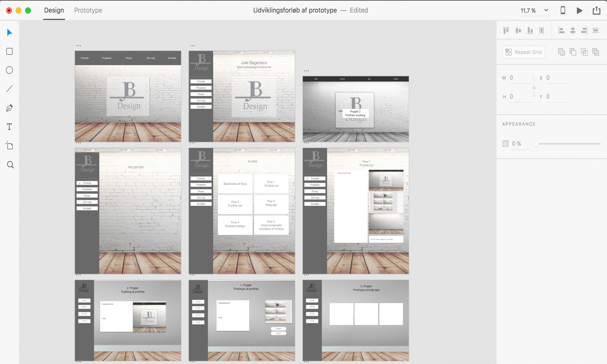
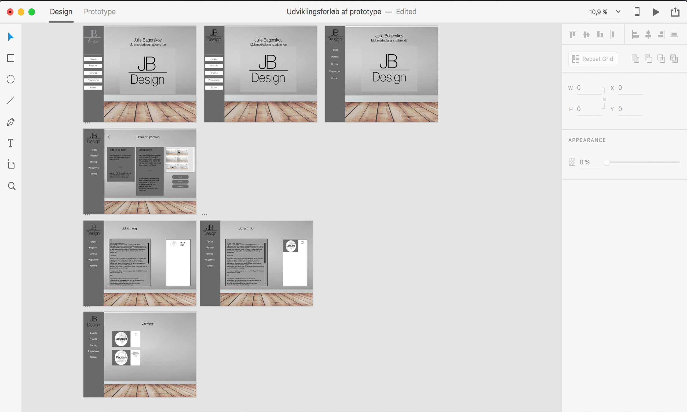
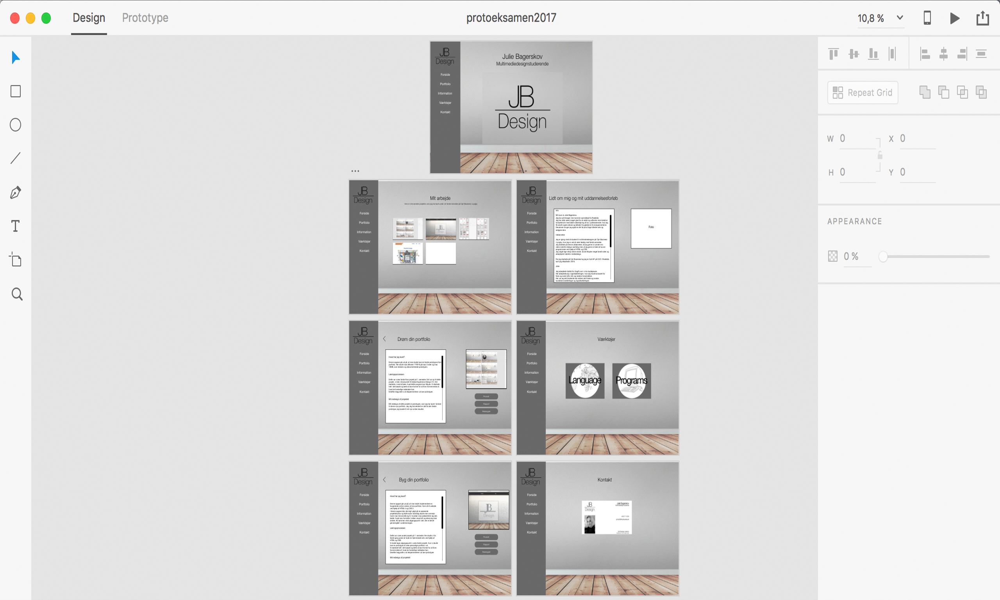
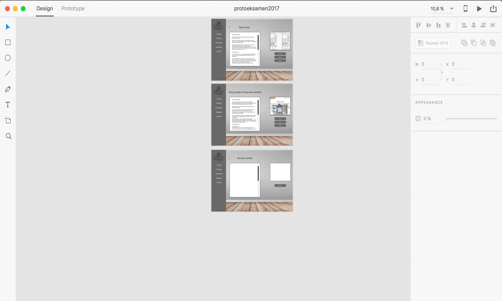
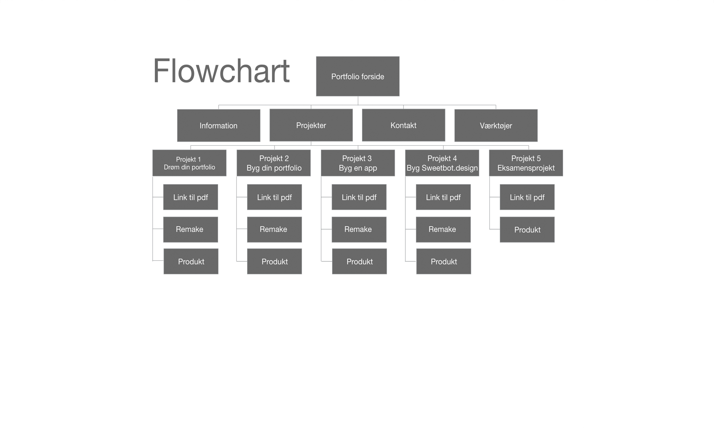
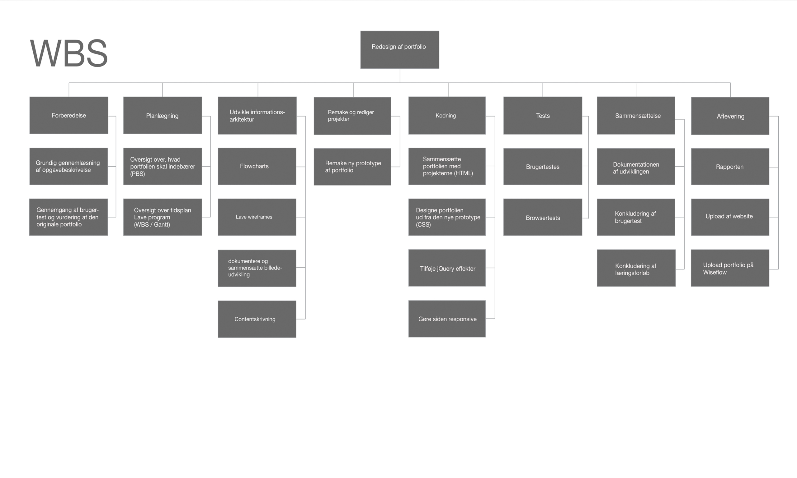

Eksamen 1. semester 2017
Hvad har jeg lavet?
Dette projekt er vores 1. semesters eksamensopgave.
Formålet med denne opgave er, at vi skla recreate vores første portfolio. Derved kan vi se en udvikling fra starten af semestret til slut semester.
Man kan finde opgavebeskrivelsen i linket.
Læringsprocessen
Jeg føler, at jeg har lært utrolig meget på dette semester.
Vi har gennemgået lige fra grafisk design til web development til projektplanlægning og segmentering. Det har været utrolig lærerigt, men noget af det jeg har fået mest ud af har været denne opgave.
I denne opgave blev vi virkelig testet i alt det, vi har gennemgået det sidste halve år.
Vi har fået lov til at stå på egne ben og prøve at finde ud af, hvordan det er uden at have en lærer til at guide os igennem hele forløbet. Dette har så også gjaldt, når vi har stødt på udfordringer undervejs. Her har jeg så valgt at sidde og læse artikler og guides på internettet og set youtubeklip, indtil det virkede. Vi medstuderende har samtidig været super gode til at hjælpe hinanden, hvis det var muligt, hvilket har givet et samvær, som har været en dejlig støtte gennem forløbet.
Jeg startede ud med at lave en informationsarkitektur for at få et overblik over, hvad jeg ville have med i mit projekt.
Her brugte jeg redskaberne, jeg havde lært fra flow 4 med bl.a. PBS og WBS samt et flowchart, så jeg vidste, hvor mange sider jeg ca. skulle designe.
Derefter lavede jeg en wireframe af siderne, så jeg havde en idé om, hvordan jeg ville sætte siderne op, som vi lærte i nogle af de første flows.
Herefter begyndte jeg at lave nogle mockups som senere blev til min prototype.
Her legede jeg med designidéer og opstillinger. Jeg havde lidt svært ved at beslutte mig for hvilken baggrund, jeg ville bruge og hvilke farvetemaer, der ville passe godt sammen. Jeg havde overvejet at putte lidt flere farver ind, men jeg syntes, de grålige farver havde en god kontrast til baggrunden og trægulvet. Alt i alt gav hele kombinationen af baggrunden, gulvet og de grålige farver et design som virker mindre forstyrrende, stilet og samtidig anderledes.







